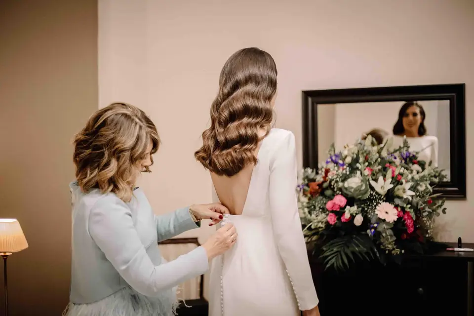

La Bohème 1994
Valencia
La Bohème 1994 es una empresa de Alta Costura que dispone de diseños propios exclusivos para darle un toque de distinción a tu imagen en un día tan especial. Su equipo de profesionales procurarán brindarte la mejor atención para que encuentres tu vestido de novia hecho a medida y con el que te sientas cómoda.
Desde 1600€
Solicitar Presupuesto